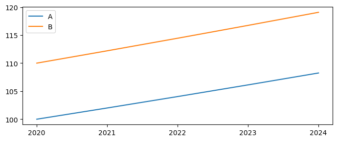
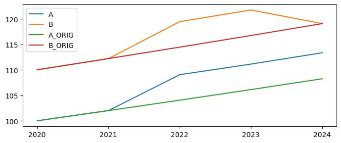
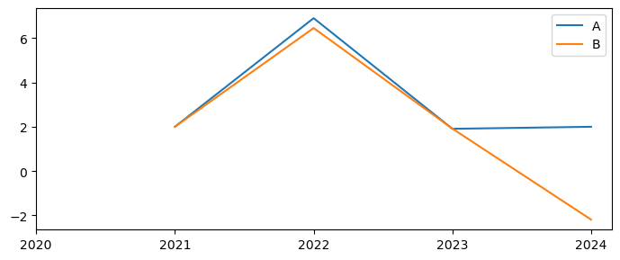

# Create a dataframe using standard pandas
df = pd.DataFrame({'B': [1,1,1,1,1,1],'C':[1,2,3,6,8,9],'E':[4,4,4,4,4,4]},index=[v for v in range(2020,2026)])
df
| B | C | E | |
|---|---|---|---|
| 2020 | 1 | 1 | 4 |
| 2021 | 1 | 2 | 4 |
| 2022 | 1 | 3 | 4 |
| 2023 | 1 | 6 | 4 |
| 2024 | 1 | 8 | 4 |
| 2025 | 1 | 9 | 4 |
df.upd('c = 142.0')
| B | C | E | |
|---|---|---|---|
| 2020 | 1 | 142.0 | 4 |
| 2021 | 1 | 142.0 | 4 |
| 2022 | 1 | 142.0 | 4 |
| 2023 | 1 | 142.0 | 4 |
| 2024 | 1 | 142.0 | 4 |
| 2025 | 1 | 142.0 | 4 |
df.upd("""
# Same number of values as years
<2021 2024> A = 42 44 45 46 # 4 years
<2020 > B = 200 # 1 year
c = 500 # Same period as previous line
<-0 -1> D = 33 # All years
""")
| B | C | E | A | D | |
|---|---|---|---|---|---|
| 2020 | 200.0 | 500.0 | 4 | 0.0 | 33.0 |
| 2021 | 1.0 | 2.0 | 4 | 42.0 | 33.0 |
| 2022 | 1.0 | 3.0 | 4 | 44.0 | 33.0 |
| 2023 | 1.0 | 6.0 | 4 | 45.0 | 33.0 |
| 2024 | 1.0 | 8.0 | 4 | 46.0 | 33.0 |
| 2025 | 1.0 | 9.0 | 4 | 0.0 | 33.0 |
df.upd('''
<2022 2024> h i j k = 40 # earlier values are set to zero by default
<2020> p q r s = 1000 # All values beginning in 2020 set to 1000
<2021 -1> p q r s =growth 2 # -1 indicates the last year of dataframe
''')
| B | C | E | H | I | J | K | P | Q | R | S | |
|---|---|---|---|---|---|---|---|---|---|---|---|
| 2020 | 1 | 1 | 4 | 0.0 | 0.0 | 0.0 | 0.0 | 1000.000000 | 1000.000000 | 1000.000000 | 1000.000000 |
| 2021 | 1 | 2 | 4 | 0.0 | 0.0 | 0.0 | 0.0 | 1020.000000 | 1020.000000 | 1020.000000 | 1020.000000 |
| 2022 | 1 | 3 | 4 | 40.0 | 40.0 | 40.0 | 40.0 | 1040.400000 | 1040.400000 | 1040.400000 | 1040.400000 |
| 2023 | 1 | 6 | 4 | 40.0 | 40.0 | 40.0 | 40.0 | 1061.208000 | 1061.208000 | 1061.208000 | 1061.208000 |
| 2024 | 1 | 8 | 4 | 40.0 | 40.0 | 40.0 | 40.0 | 1082.432160 | 1082.432160 | 1082.432160 | 1082.432160 |
| 2025 | 1 | 9 | 4 | 0.0 | 0.0 | 0.0 | 0.0 | 1104.080803 | 1104.080803 | 1104.080803 | 1104.080803 |
df.upd("""
# Same number of values as years
<2021 2024> A = 42 44 45 46 # 4 years
<2023 > B = 200 # 1 year
c = 500 # inerits previous time-period specification
""")
| B | C | E | A | |
|---|---|---|---|---|
| 2020 | 1.0 | 1.0 | 4 | 0.0 |
| 2021 | 1.0 | 2.0 | 4 | 42.0 |
| 2022 | 1.0 | 3.0 | 4 | 44.0 |
| 2023 | 200.0 | 500.0 | 4 | 45.0 |
| 2024 | 1.0 | 8.0 | 4 | 46.0 |
| 2025 | 1.0 | 9.0 | 4 | 0.0 |
df.upd('NEW2 = 11 17 12 14 15 17')
| B | C | E | NEW2 | |
|---|---|---|---|---|
| 2020 | 1 | 1 | 4 | 11.0 |
| 2021 | 1 | 2 | 4 | 17.0 |
| 2022 | 1 | 3 | 4 | 12.0 |
| 2023 | 1 | 6 | 4 | 14.0 |
| 2024 | 1 | 8 | 4 | 15.0 |
| 2025 | 1 | 9 | 4 | 17.0 |
df.upd('''
# Or one number to all years in between start and end
<2022 2024> B + 42 # one value broadcast to 3 years
<2022 2024> E + -1 -2 -3 # add (subtract) a different value to each of the three rows specified
''')
| B | C | E | |
|---|---|---|---|
| 2020 | 1.0 | 1 | 4.0 |
| 2021 | 1.0 | 2 | 4.0 |
| 2022 | 43.0 | 3 | 3.0 |
| 2023 | 43.0 | 6 | 2.0 |
| 2024 | 43.0 | 8 | 1.0 |
| 2025 | 1.0 | 9 | 4.0 |
df.upd('''
# Same number of values as years
<2021 2023> B * 42 44 55
''')
| B | C | E | |
|---|---|---|---|
| 2020 | 1.0 | 1 | 4 |
| 2021 | 42.0 | 2 | 4 |
| 2022 | 44.0 | 3 | 4 |
| 2023 | 55.0 | 6 | 4 |
| 2024 | 1.0 | 8 | 4 |
| 2025 | 1.0 | 9 | 4 |
df.upd('''
<-0 -1> A = 1
<2021 2022 > A % 42 44 # Two specific years / rows
<-0 -1> B % 10 # all rows
C = 100 # all rows persist
<2023 2025> C % -12 # now only for 3 years
''')
| B | C | E | A | |
|---|---|---|---|---|
| 2020 | 1.1 | 100.0 | 4 | 1.00 |
| 2021 | 1.1 | 100.0 | 4 | 1.42 |
| 2022 | 1.1 | 100.0 | 4 | 1.44 |
| 2023 | 1.1 | 88.0 | 4 | 1.00 |
| 2024 | 1.1 | 88.0 | 4 | 1.00 |
| 2025 | 1.1 | 88.0 | 4 | 1.00 |
res = df.upd('''
# Same number of values as years
<-0 -1> A = 100
<2021 2022> A =GROWTH 1 5
<2020> c = 100
<2021 2025> c =GROWTH 2
''')
# print the resulting DataFrame (res) first as levels and then as a growth rate uising the pandas pct_change() method
print(f'Dataframe:\n{res}\n\nGrowth:\n{res.pct_change()*100.0}\n')
Dataframe:
B C E A
2020 1 100.000000 4 100.00
2021 1 102.000000 4 101.00
2022 1 104.040000 4 106.05
2023 1 106.120800 4 100.00
2024 1 108.243216 4 100.00
2025 1 110.408080 4 100.00
Growth:
B C E A
2020 NaN NaN NaN NaN
2021 0.0 2.0 0.0 1.000000
2022 0.0 2.0 0.0 5.000000
2023 0.0 2.0 0.0 -5.704856
2024 0.0 2.0 0.0 0.000000
2025 0.0 2.0 0.0 0.000000
res =df.upd('''
<-0 -1> A STEP2 = 1
<2021 > A STEP2 =GROWTH 1 # All selected years set to the same growth rate
<2022 -1> A +growth 2 # Add to the existing growth rate these numbers
''')
print(f'Dataframe:\n{res}\n\nGrowth:\n{res.pct_change()*100}\n')
Dataframe:
B C E A STEP2
2020 1 1 4 1.000000 1.00
2021 1 2 4 1.010000 1.01
2022 1 3 4 1.020200 1.00
2023 1 6 4 1.040604 1.00
2024 1 8 4 1.061416 1.00
2025 1 9 4 1.082644 1.00
Growth:
B C E A STEP2
2020 NaN NaN NaN NaN NaN
2021 0.0 100.000000 0.0 1.000000 1.000000
2022 0.0 50.000000 0.0 1.009901 -0.990099
2023 0.0 100.000000 0.0 2.000000 0.000000
2024 0.0 33.333333 0.0 2.000000 0.000000
2025 0.0 12.500000 0.0 2.000000 0.000000
df.upd('''
<-0 -1> A = 1
< 2021 2022> A =diff 2 4 # Same number of values as years
<2020 > UpBy2 = 100 # sets 2020 value of UPBy2 to 100
<2021 2025> UpBy2 =diff 2 # increases by 2 from 2021 to 2025
''')
| B | C | E | A | UPBY2 | |
|---|---|---|---|---|---|
| 2020 | 1 | 1 | 4 | 1.0 | 100.0 |
| 2021 | 1 | 2 | 4 | 3.0 | 102.0 |
| 2022 | 1 | 3 | 4 | 7.0 | 104.0 |
| 2023 | 1 | 6 | 4 | 1.0 | 106.0 |
| 2024 | 1 | 8 | 4 | 1.0 | 108.0 |
| 2025 | 1 | 9 | 4 | 1.0 | 110.0 |
df = pd.DataFrame(100.,
index=[v for v in range(2020,2025)],
columns=['A','B'])
df=df.upd("""<2021 -1> A =growth 2
<2020 -1> B = 110
<2021 -1> B =growth 2
""")
# Store these variables for later use in comparisons
df['A_ORIG']=df['A']
df['B_ORIG']=df['B']
df
| A | B | A_ORIG | B_ORIG | |
|---|---|---|---|---|
| 2020 | 100.000000 | 110.000000 | 100.000000 | 110.000000 |
| 2021 | 102.000000 | 112.200000 | 102.000000 | 112.200000 |
| 2022 | 104.040000 | 114.444000 | 104.040000 | 114.444000 |
| 2023 | 106.120800 | 116.732880 | 106.120800 | 116.732880 |
| 2024 | 108.243216 | 119.067538 | 108.243216 | 119.067538 |
df[['A','B']].plot(xticks=df.index,figsize=(7,3)); #the xticks option forces mathplitlib to only print x-axis values that exist in the index (no decimals)

df=df.upd("""
<2022 2023> A + 5 --kg
<2022 2023> B + 5 --nkg
""")
df[['A','B','A_ORIG','B_ORIG']].plot(xticks=df.index,figsize=(7,3));

dfg=df[['A','B']].pct_change()*100
dfg.plot(xticks=dfg.index,figsize=(7,3));

# instantiate a new dataframe with one column 'A' with a value 100 everywhere and index 2020-2025
dftest = pd.DataFrame(100.0,
index=[v for v in range(2020,2026)], # create row index
# equivalent to index=[2020,2021,2022,2023,2024,2025]
columns=['A']) # create column name
dftest
| A | |
|---|---|
| 2020 | 100.0 |
| 2021 | 100.0 |
| 2022 | 100.0 |
| 2023 | 100.0 |
| 2024 | 100.0 |
| 2025 | 100.0 |
# Update a to have growth rate accelerationg linearly by 1 from 1 Percent to 5 percent
original = dftest.upd('<2021 2025> a =growth 1 2 3 4 5')
print(f'Levels:\n{original}\n\nGrowth:\n{original.pct_change()*100}\n')
Levels:
A
2020 100.000000
2021 101.000000
2022 103.020000
2023 106.110600
2024 110.355024
2025 115.872775
Growth:
A
2020 NaN
2021 1.0
2022 2.0
2023 3.0
2024 4.0
2025 5.0
nokg = original.upd('''
<2021 2025> a =growth 1 2 3 4 5
<2021 2023> a = 120
''',lprint=0)
kg = original.upd('''
<2021 2025> a =growth 1 2 3 4 5
<2021 2023> a = 120 --kg
''',lprint=0)
kg=kg.rename(columns={"A":"KG"}) #rename cols to facilitate display
nokg=nokg.rename(columns={"A":"NOKG"}) #rename cols to facilitate display
df=original.rename(columns={"A":"Orig"}) #rename cols to facilitate display
combo=pd.concat([kg,nokg,df], axis=1)
combo
print(f'Levels\n{combo}\n\nGrowth\n{combo.pct_change()*100}')
Levels
KG NOKG Orig
2020 100.00 100.000000 100.000000
2021 120.00 120.000000 101.000000
2022 120.00 120.000000 103.020000
2023 120.00 120.000000 106.110600
2024 124.80 110.355024 110.355024
2025 131.04 115.872775 115.872775
Growth
KG NOKG Orig
2020 NaN NaN NaN
2021 20.0 20.00000 1.0
2022 0.0 0.00000 2.0
2023 0.0 0.00000 3.0
2024 4.0 -8.03748 4.0
2025 5.0 5.00000 5.0
# Create a data frame
dftest = pd.DataFrame(100.0,
index=[v for v in range(2020,2025)], # create row index
# equivalent to index=[2020,2021,2022,2023,2024]
columns=['A','B','C','D','E']) # create column name
dftest
| A | B | C | D | E | |
|---|---|---|---|---|---|
| 2020 | 100.0 | 100.0 | 100.0 | 100.0 | 100.0 |
| 2021 | 100.0 | 100.0 | 100.0 | 100.0 | 100.0 |
| 2022 | 100.0 | 100.0 | 100.0 | 100.0 | 100.0 |
| 2023 | 100.0 | 100.0 | 100.0 | 100.0 | 100.0 |
| 2024 | 100.0 | 100.0 | 100.0 | 100.0 | 100.0 |
dfres = dftest.upd('''
<2022 2023> c = 200
<2022 2023> d = 300
<2022 2023> e = 400 --no_keep_growth
''',keep_growth=True) # <= Set keep_growth to True for the entirety of the command,
# except for e where it is overridden by the --no_keep_growth flag
print(f'Dataframe:\n{dfres}\n\nGrowth:\n{dfres.pct_change()*100}\n')
Dataframe:
A B C D E
2020 100.0 100.0 100.0 100.0 100.0
2021 100.0 100.0 100.0 100.0 100.0
2022 100.0 100.0 200.0 300.0 400.0
2023 100.0 100.0 200.0 300.0 400.0
2024 100.0 100.0 200.0 300.0 100.0
Growth:
A B C D E
2020 NaN NaN NaN NaN NaN
2021 0.0 0.0 0.0 0.0 0.0
2022 0.0 0.0 100.0 200.0 300.0
2023 0.0 0.0 0.0 0.0 0.0
2024 0.0 0.0 0.0 0.0 -75.0
dfinput=df.upd('A = 100')
print(f'input dataframe: \n{dfinput}\n\n')
for severity in [0,0.5,1]:
# First make a dataframe with some growth rate
res = dfinput.upd('''
<2021 2025>
a =growth 1 2 3 4 5
b + 10
''',scale=severity)
print(f'{severity=}\nDataframe:\n{res}\n\nGrowth:\n{res.pct_change()*100}\n\n')
#
# Here the updated dataframe is only printed.
# A more realistic use case is to simulate a model like this:
# dummy_ = mpak(res,keep='Severity {serverity}') # more realistic
input dataframe:
Orig A
2020 100.000000 100.0
2021 101.000000 100.0
2022 103.020000 100.0
2023 106.110600 100.0
2024 110.355024 100.0
2025 115.872775 100.0
severity=0
Dataframe:
Orig A B
2020 100.000000 100.0 0.0
2021 101.000000 100.0 0.0
2022 103.020000 100.0 0.0
2023 106.110600 100.0 0.0
2024 110.355024 100.0 0.0
2025 115.872775 100.0 0.0
Growth:
Orig A B
2020 NaN NaN NaN
2021 1.0 0.0 NaN
2022 2.0 0.0 NaN
2023 3.0 0.0 NaN
2024 4.0 0.0 NaN
2025 5.0 0.0 NaN
severity=0.5
Dataframe:
Orig A B
2020 100.000000 100.000000 0.0
2021 101.000000 100.500000 5.0
2022 103.020000 101.505000 5.0
2023 106.110600 103.027575 5.0
2024 110.355024 105.088126 5.0
2025 115.872775 107.715330 5.0
Growth:
Orig A B
2020 NaN NaN NaN
2021 1.0 0.5 inf
2022 2.0 1.0 0.0
2023 3.0 1.5 0.0
2024 4.0 2.0 0.0
2025 5.0 2.5 0.0
severity=1
Dataframe:
Orig A B
2020 100.000000 100.000000 0.0
2021 101.000000 101.000000 10.0
2022 103.020000 103.020000 10.0
2023 106.110600 106.110600 10.0
2024 110.355024 110.355024 10.0
2025 115.872775 115.872775 10.0
Growth:
Orig A B
2020 NaN NaN NaN
2021 1.0 1.0 inf
2022 2.0 2.0 0.0
2023 3.0 3.0 0.0
2024 4.0 4.0 0.0
2025 5.0 5.0 0.0
dfinput.upd('''
# Same number of values as years
<2021 2022> A * 42 44
''',lprint=1);
Update * [42.0, 44.0] 2021 2022
A Before After Diff
2021 100.0000 4200.0000 4100.0000
2022 100.0000 4400.0000 4300.0000
try:
xx = df.upd('''
# Same number of values as years
<2021 2022> Aa * 42 44
''',create=False)
print(xx)
except Exception as inst:
xx = None
print(inst)
Variable to update not found:AA, timespan = [2021 2022]
Set create=True if you want the variable created:
df
| Orig | |
|---|---|
| 2020 | 100.000000 |
| 2021 | 101.000000 |
| 2022 | 103.020000 |
| 2023 | 106.110600 |
| 2024 | 110.355024 |
| 2025 | 115.872775 |